Stempelkaarten, klantenkaarten met korting, gratis tickets voor je events, kortingsbonnen, actiecodes en acties met andere zaken. In één gratis app, met één scanner.
Pasr Zakelijk is de kant van Pasr voor ondernemers. Je maakt er in je eigen logo en kleur alles mee om klanten terug te laten komen. Je klanten bewaren het in de gratis app Pasr, in Apple Wallet of in Google Wallet. Jij en je medewerkers scannen aan de toonbank of aan de deur met je telefoon, tablet of computer.
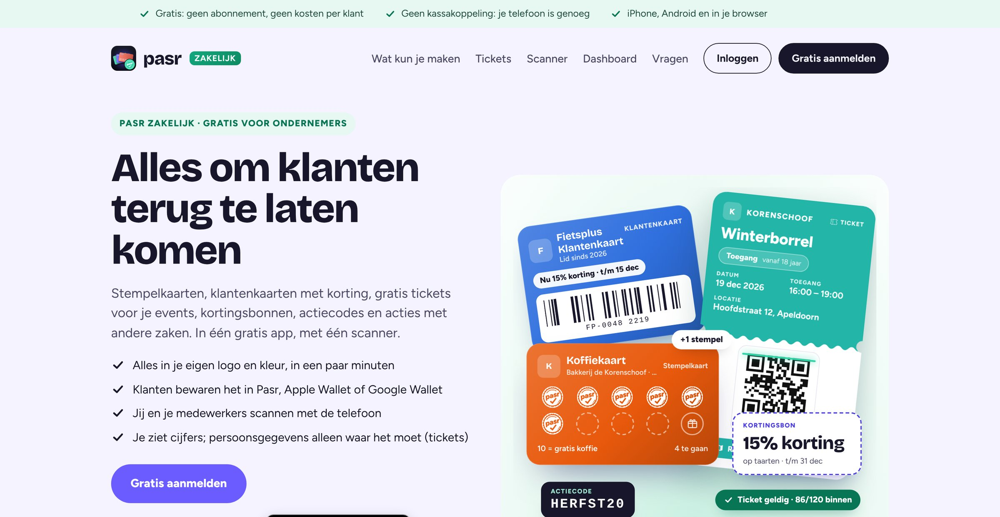
| Product | Wat het doet | Hoofdstuk |
|---|---|---|
| Stempelkaart | Sparen per bezoek, met jouw beloning. 2 tot 30 stempels, tot 5 kaarten, tussentijdse beloningen. | 4 |
| Klantenkaart | Een eigen ledenkaart met barcode (QR, Code 128 of EAN-13) voor herkenning, sparen, vaste korting of korting in een periode. | 5 |
| Tickets | Gratis events met aanmelding, plekken, wachtlijst en scannen aan de deur. | 6 |
| Kortingsbon | Procent of bedrag, minimale besteding, één per klant. Alleen in Pasr te verzilveren. | 7 |
| Actiecode | Een eigen code als HERFST20, met limiet en einddatum. | 8 |
| Gezamenlijke actie | Samen sparen met andere zaken in je straat of winkelcentrum, op uitnodiging. | 9 |
Niets. Er is geen abonnement en er zijn geen kosten per klant, stempel, ticket of scan. Er staat ook geen reclame op je kaart of ticket. Je hebt geen kassakoppeling of apart apparaat nodig: je telefoon is genoeg.
Je gebruikt overal hetzelfde Pasr-account. Wat je op het ene apparaat maakt, zie je meteen op het andere.
| Waar | Wat je nodig hebt | Waar je het vindt |
|---|---|---|
| iPhone en iPad | iOS 17 of nieuwer | App Store: Pasr Zakelijk |
| Mac | macOS 14 of nieuwer (eigen Mac-app, zelfde aankoop als op iPhone) | App Store: Pasr Zakelijk |
| Android | Android 8 of nieuwer | pasr.nl/zakelijk/download (niet in de Play Store) |
| Browser | Elke moderne browser, op computer, tablet of telefoon | pasr.nl/zakelijk/dashboard |
Het dashboard in de browser kan alles wat de apps kunnen, met dezelfde gegevens. De apps zijn er in het Nederlands en het Engels. In de app op de iPhone staan de onderdelen onder de tabbladen Scannen, Acties, Promotie, Overzicht, Medewerkers en Instellingen. Op de iPad, de Mac en in het dashboard staan ze in een zijbalk, in de groepen Klantenbinding, Groei en Je zaak.
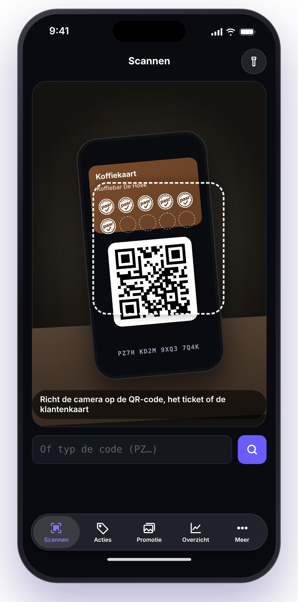
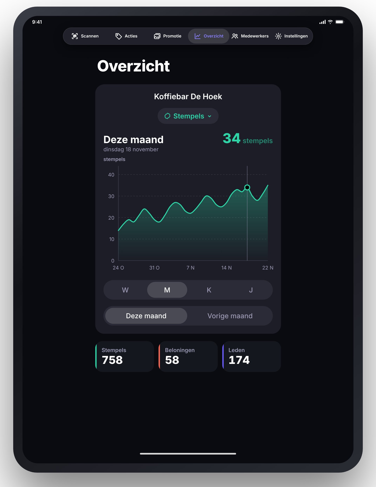
Lid worden van je klantenkaart en een kortingsbon of actiecode bewaren doet je klant in de app Pasr. Klanten voegen iets toe met een QR-code bij de kassa, een link, of de knop Voeg toe aan Pasr op je eigen website (zie hoofdstuk 12).
De afbeeldingen van het dashboard en van pasr.nl zijn gemaakt met de echte code van de website, met een verzonnen voorbeeldzaak (Bakkerij de Korenschoof in Apeldoorn) en verzonnen cijfers. De schermen van de app op iPhone, iPad en Mac zijn trouwe namaak van de app, op dezelfde manier gemaakt als de beelden in de App Store (voorbeeldzaak Koffiebar De Hoek). Bij elk bijschrift staat waar het beeld vandaan komt. Namen van klanten en medewerkers zijn verzonnen.
Een account maken en je zaak aanmelden kost een paar minuten. We keuren elke zaak met de hand goed, meestal binnen een werkdag. In de tussentijd maak je alvast je eerste kaart of event.
Je logt overal in met een Pasr-account. Dat is hetzelfde account als in de app Pasr voor klanten, als je die al gebruikt.
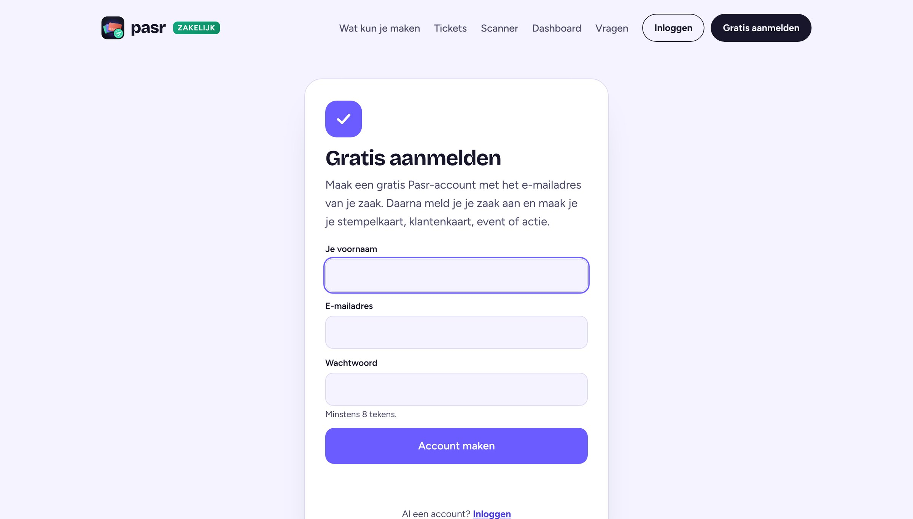
Na het inloggen vraagt Pasr Zakelijk om je zaak aan te melden. Dat is gratis.
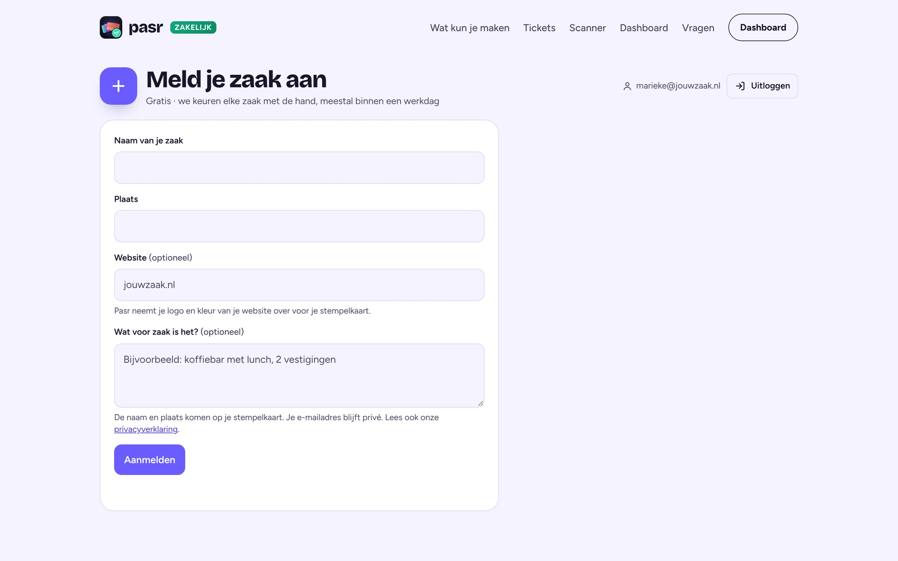
Je zaak staat daarna op Wacht op goedkeuring. We bekijken je aanmelding, meestal binnen een werkdag, en je krijgt een mail. Ondertussen kun je je stempelkaart, klantenkaart of event al ontwerpen en als concept bewaren. Online zetten, stempels geven en scannen kan pas als je zaak is goedgekeurd.
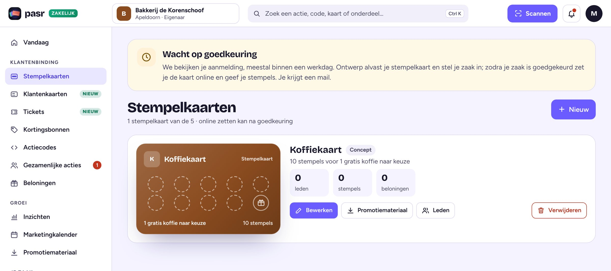
Is je zaak geblokkeerd, dan staan je kaarten offline en kunnen er geen stempels worden gezet. Denk je dat dat niet klopt, mail dan naar support@pasr.nl.
Log in het dashboard of in de app in met je e-mailadres en wachtwoord. Wachtwoord vergeten? Kies Wachtwoord vergeten?; je krijgt een mail met een link om een nieuw wachtwoord te kiezen.
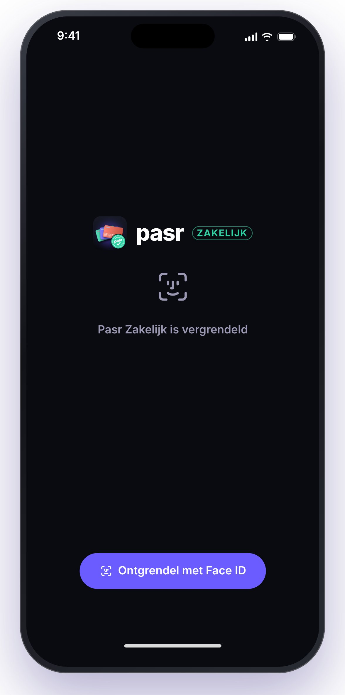
Ligt je iPhone of iPad aan de kassa? Zet dan vergrendelen aan. Bij openen en na terugkeer naar de app vraagt Pasr Zakelijk om Face ID, Touch ID of je toegangscode.
Op de Mac vraagt de app om Touch ID of het wachtwoord van je Mac. Op Android vergrendel je met je vingerafdruk of gezicht.
Werk je voor meer dan één zaak, bijvoorbeeld als eigenaar van je eigen zaak en als medewerker bij een andere, dan wissel je bovenin met de zaakkiezer. Je ziet per zaak of je eigenaar of medewerker bent. Heb je nog geen eigen zaak, dan staat daar ook Nieuwe zaak aanmelden.
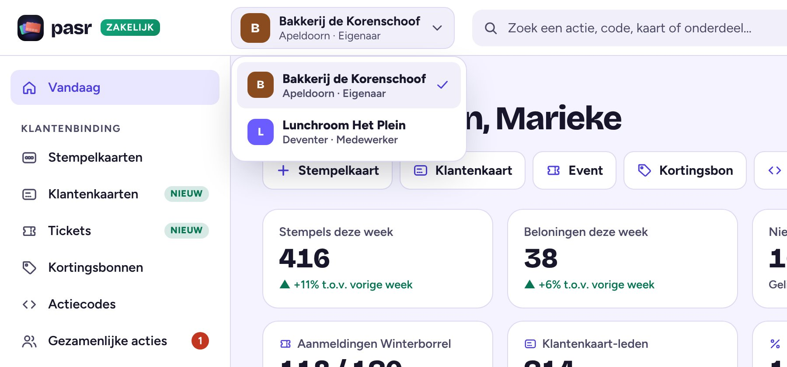
Heeft je zaak meer filialen, dan maak je die aan als vestigingen van dezelfde zaak (hoofdstuk 13). Ze delen dezelfde stempelkaart; de cijfers blijven per vestiging gescheiden.
Medewerkers loggen in met een eigen Pasr-account en kunnen alleen scannen: stempels geven, belonen en ongedaan maken. Ze zien je instellingen, cijfers en acties niet.
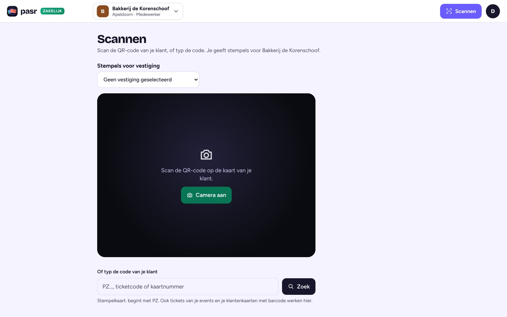
Een medewerker kan ook de app Pasr Zakelijk gebruiken. Daar ziet hij alleen Scannen en Instellingen. In de app kiest hij bij het inloggen Ik heb een uitnodiging als medewerker en plakt hij de link of de code.
Zie elke ochtend wat er speelt: wat er te doen is, hoeveel klanten terugkwamen en wie er voor je event is aangemeld.
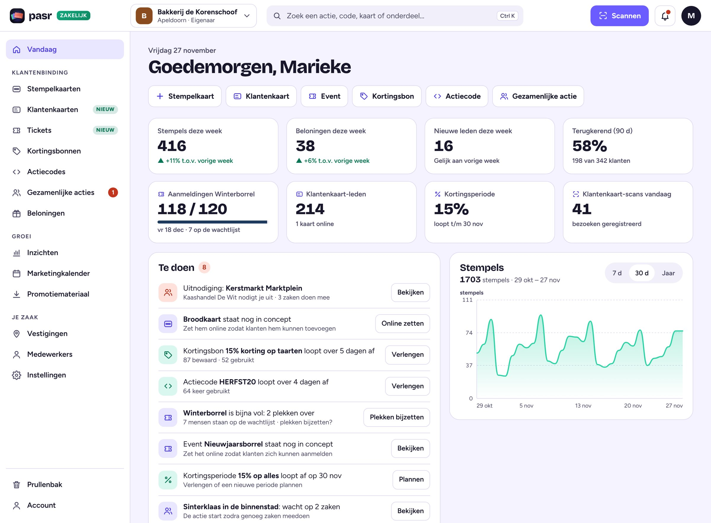
Te doen toont alleen echte openstaande punten, met een knop om het meteen te regelen:
| Punt | Knop |
|---|---|
| Uitnodiging voor een gezamenlijke actie | Bekijken |
| Stempelkaart of klantenkaart in concept | Online zetten |
| Kortingsbon of actiecode loopt binnen 7 dagen af | Verlengen |
| Event bijna vol of met een wachtlijst | Plekken bijzetten |
| Event in concept | Bekijken |
| Kortingsperiode van je klantenkaart loopt binnen een week af | Plannen |
| Gezamenlijke actie wacht op deelnemers | Uitnodigen of Bekijken |
| Je zaak wacht op goedkeuring | — |
Dezelfde punten staan achter het belletje rechtsboven. Een rood bolletje bij Gezamenlijke acties in de zijbalk telt je open uitnodigingen.
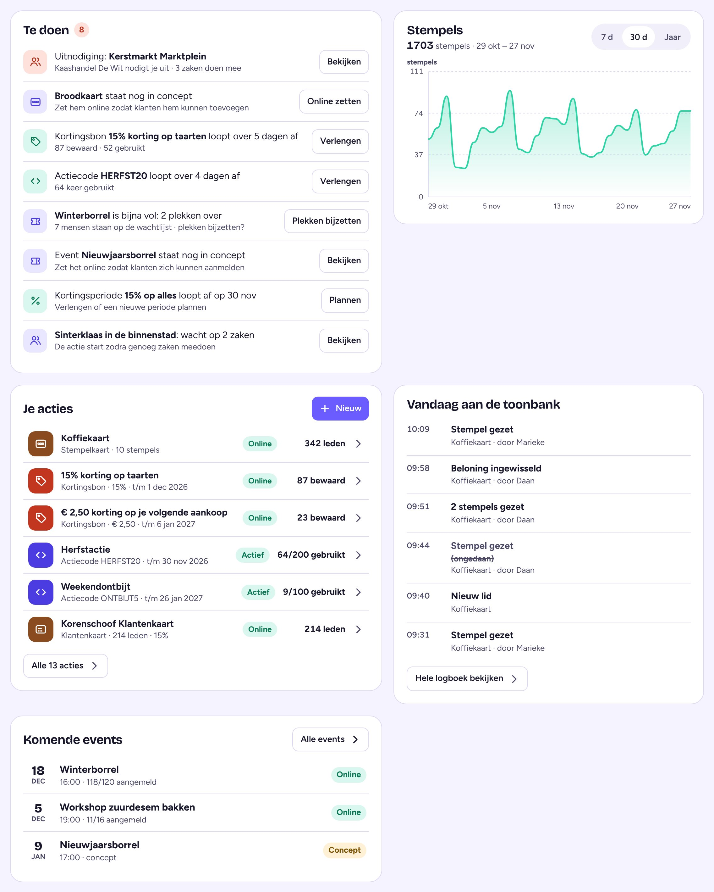
De grafiek toont je stempels per dag over 7 d, 30 d of een Jaar. Wijs een dag aan (of gebruik de pijltjestoetsen) om het aantal van die dag te zien. Je acties toont je zes belangrijkste lopende acties, met een link naar alle acties. Vandaag aan de toonbank laat zien wat er vandaag werd gescand, door wie en om hoe laat; is het nog stil, dan zie je het laatste. Via Hele logboek bekijken open je het logboek (hoofdstuk 13).
Met het zoekveld bovenin (⌘ K op een Mac, Ctrl K op Windows) spring je naar een onderdeel, stempelkaart, kortingsbon, actiecode, event of gezamenlijke actie, of maak je meteen iets nieuws.
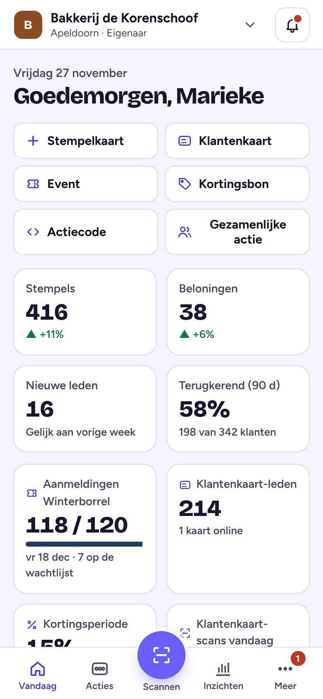
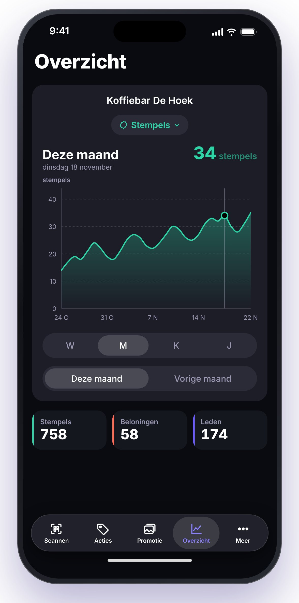
Op de Mac en op je iPhone of iPad zet je Vandaag ook als widget op je bureaublad of beginscherm (hoofdstuk 14).
Sparen per bezoek, met jouw beloning. In je eigen logo en kleur, in een paar minuten.
Een digitale stempelkaart. Je klant laat aan de kassa de QR-code van zijn kaart zien, jij scant en zet er een of meer stempels op. Is de kaart vol, dan wissel je de beloning in. Elke kaart heeft 2 tot 30 stempels; een zaak kan tot 5 stempelkaarten hebben. Gezette stempels tonen de officiële Pasr-stempel, het laatste vakje een cadeautje.
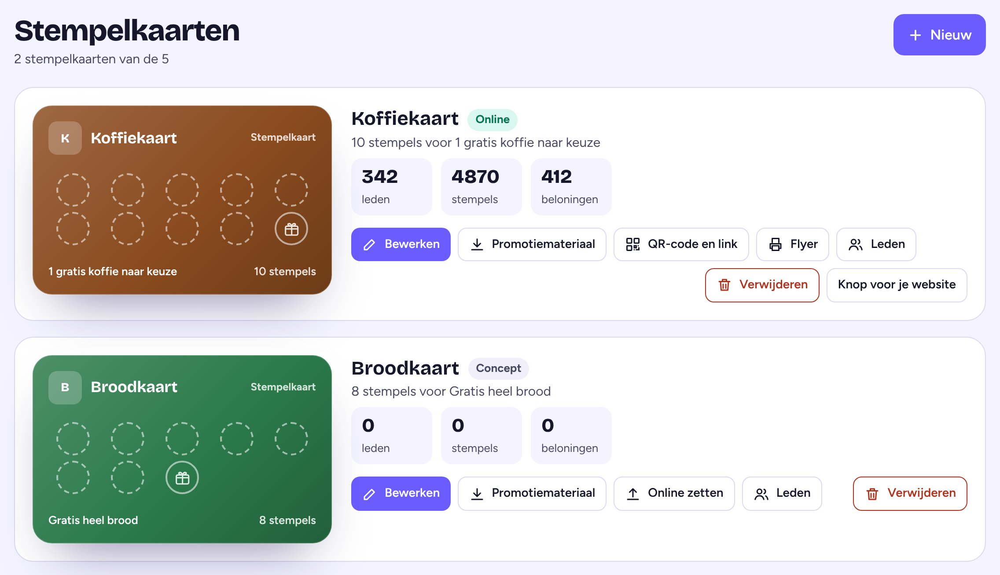
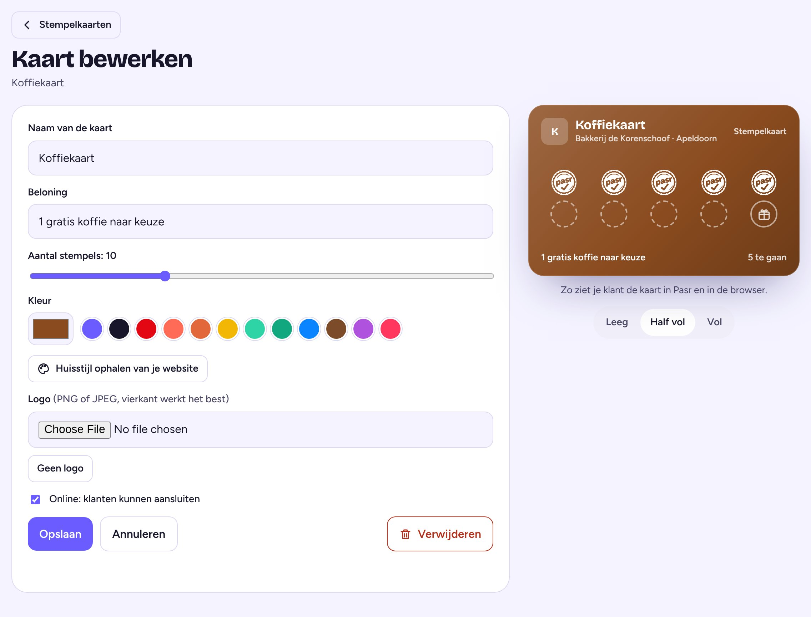
Kies bij een online kaart QR-code en link. Hang de QR-code bij de kassa of deel de link (pasr.nl/zakelijk/kaart/…). Met Pasr opent de kaart in de app; zonder app werkt hij in de browser. Je downloadt de QR-code als afbeelding, opent de A4-Flyer, of maakt Promotiemateriaal en een Knop voor je website (hoofdstuk 12).
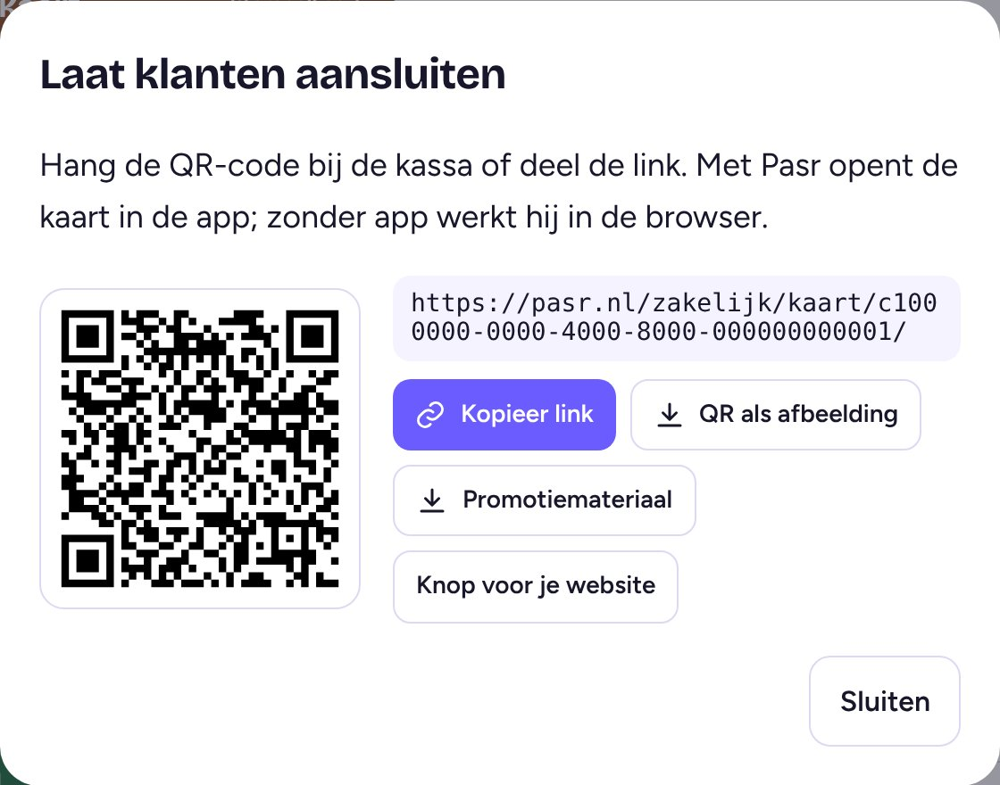
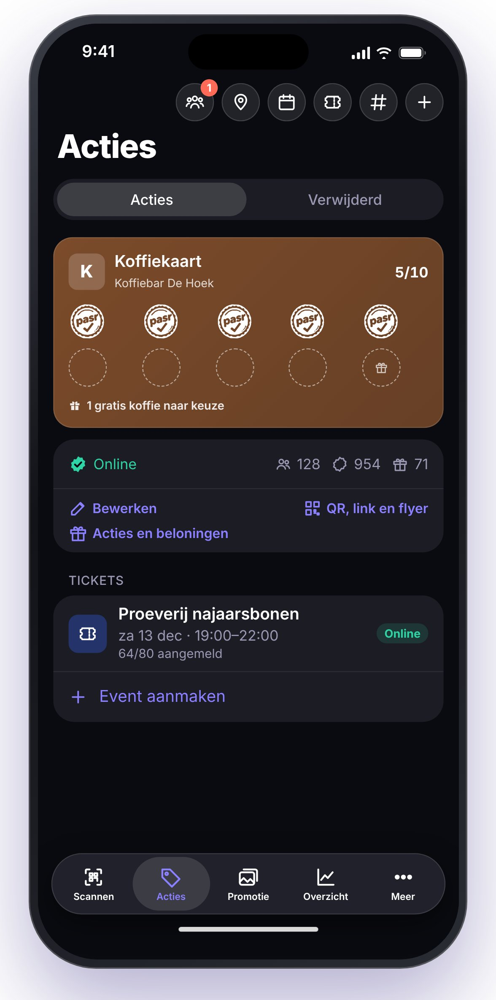
Twee instellingen gelden voor al je stempelkaarten en staan bij Instellingen › Scannen:
Met Leden zie je per lid de laatste tekens van de klantcode, of de kaart in de app of in de browser staat, de stand, het aantal beloningen, de laatste stempel en sinds wanneer iemand lid is. Pasr bewaart geen namen of contactgegevens van je klanten.
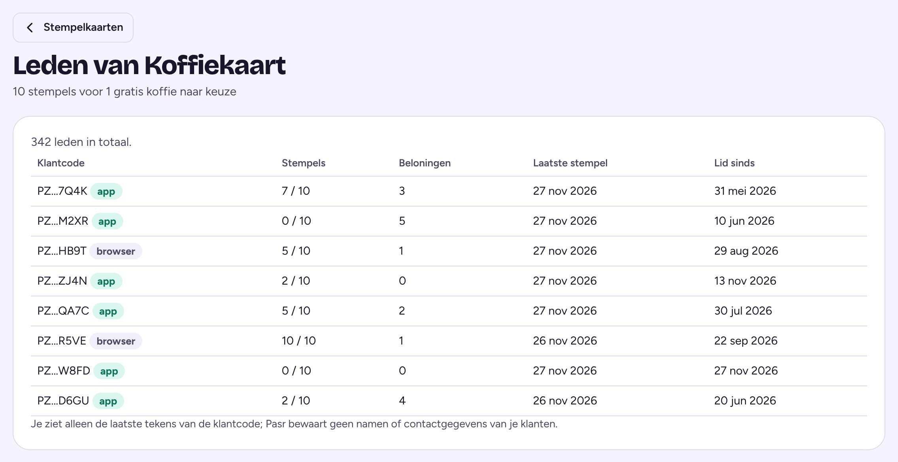
Tussentijdse beloningen, VIP-niveaus, een terugkomactie, vrienden uitnodigen en tijdelijke stempelacties (zoals dubbele stempels op dinsdag) stel je per kaart in bij Beloningen (hoofdstuk 10).
Verwijderen verplaatst een kaart naar de Prullenbak: klanten zien hem niet meer. Definitief verwijderen doe je in de Prullenbak; het logboek blijft altijd staan.
Een eigen ledenkaart. Kies het doel: herkenning, sparen, vaste korting of korting in een periode.
Een klantenkaart met barcode en kaartnummer, in je eigen logo en kleur. Je klant wordt lid in de app Pasr en heeft de kaart daar of in Apple Wallet of Google Wallet. Aan de kassa scan je de kaart en zie je meteen de korting die nu geldt en de spaarstand. Pasr maakt de kaartnummers zelf.
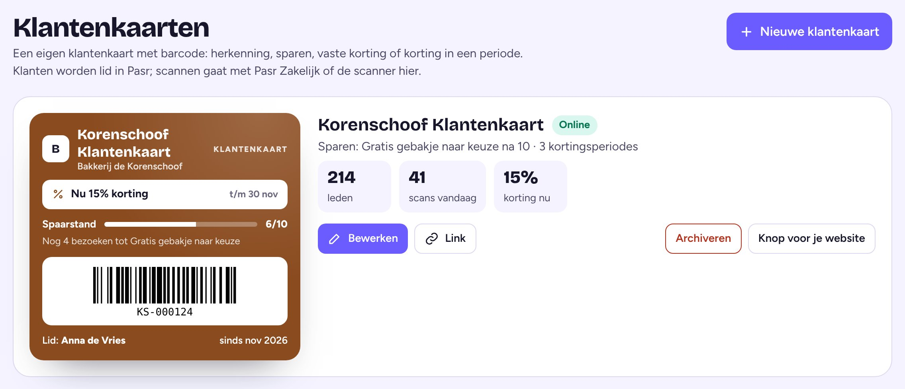
Kies er één of meer:
| Doel | Wat het doet |
|---|---|
| Lidmaatschap of herkenning | De klant laat zijn kaart zien; jij ziet wie het is. Geschikt voor vaste klanten, verenigingen en personeel. |
| Sparen voor een beloning | Elke scan telt als 1 bezoek, of als punten die je bij het scannen invult. Je kiest na hoeveel (1 tot 1000) en welke beloning. |
| Vaste korting | Altijd hetzelfde percentage voor leden. |
| Korting in een periode | Van–tot, eventueel alleen op bepaalde dagen of uren. Plan meerdere periodes vooruit. |
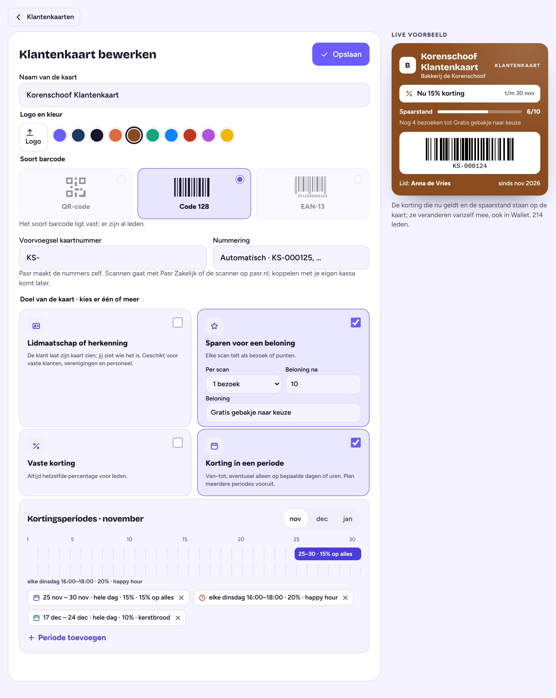
Gelden er meer kortingen tegelijk, dan telt de hoogste. De korting die nu geldt en de spaarstand staan op de kaart van je klant en veranderen vanzelf mee, ook in Wallet. Klanten die meldingen voor je kaart aanzetten, krijgen een melding als een korting begint.
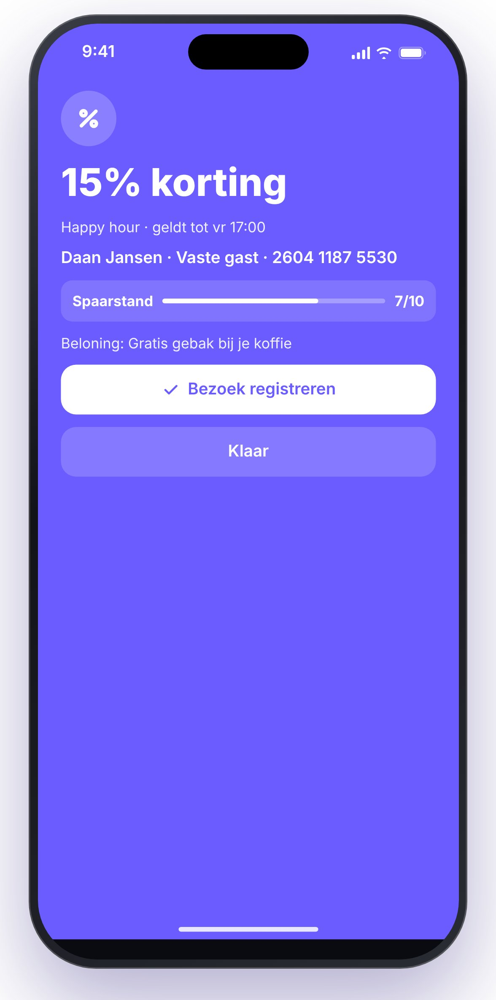
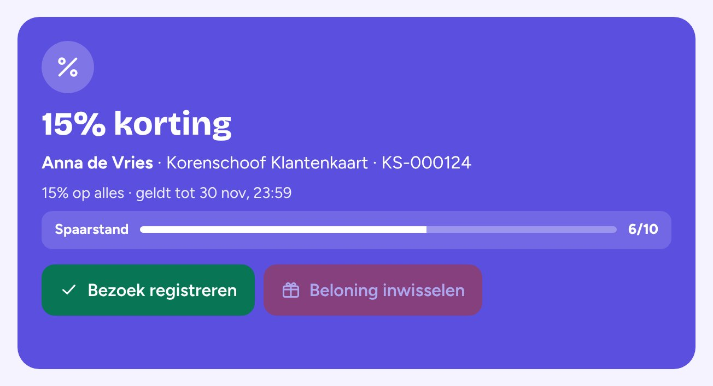
Borrel, workshop of open dag: aanmelden met naam, e-mail en geboortedatum, scannen aan de deur.
Je maakt een gratis event met een vast aantal plekken. Klanten melden zich aan op pasr.nl of in Pasr en krijgen een ticket met QR-code in Pasr, in Apple Wallet of Google Wallet en in de bevestigingsmail. Aan de deur scan je de tickets. Tickets zijn alleen voor gratis events: er zijn geen betalingen en geen ticketvoorwaarden.
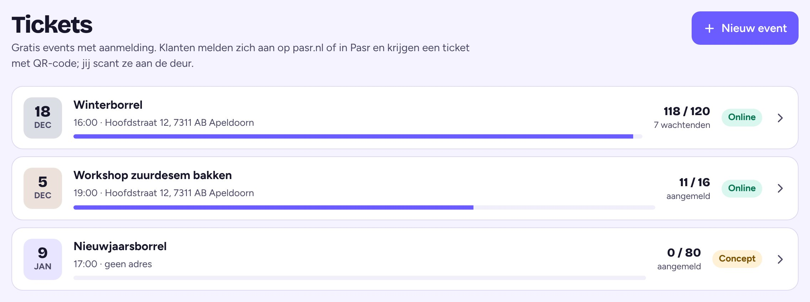
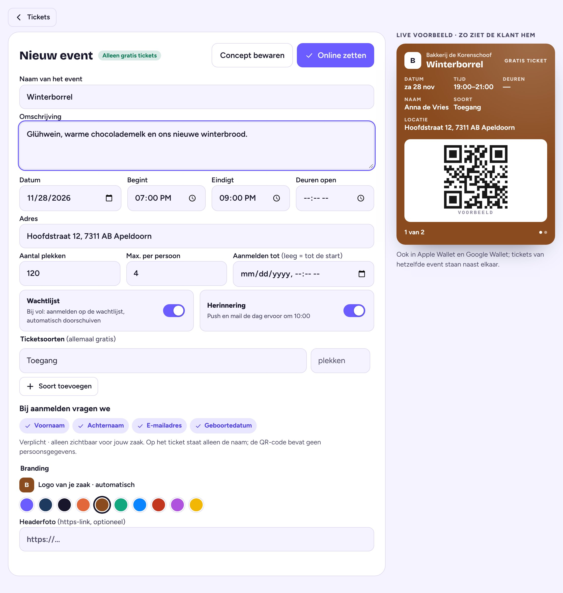
Bij aanmelden vragen we altijd voornaam, achternaam, e-mailadres en geboortedatum. De aanmeldpagina staat op pasr.nl/add/e/… : kies in je event Aanmeldlink of Knop voor je website. Wie ingelogd is in Pasr, heeft zijn tickets meteen in de app.
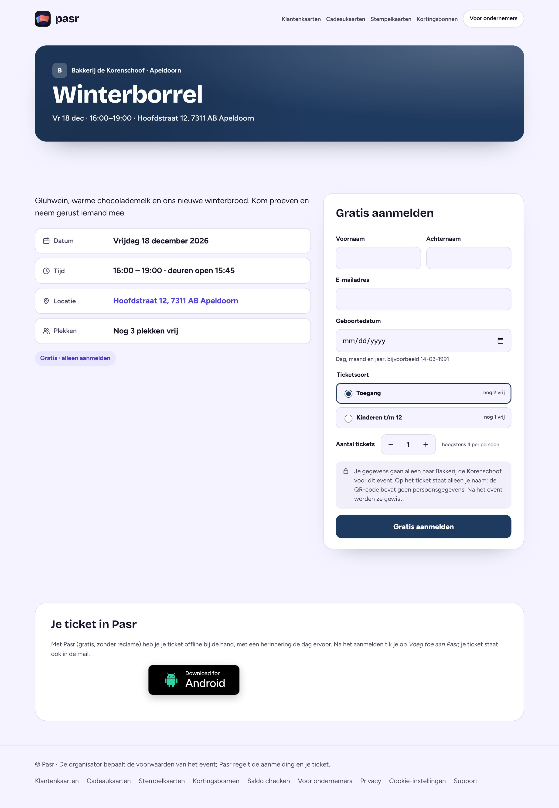
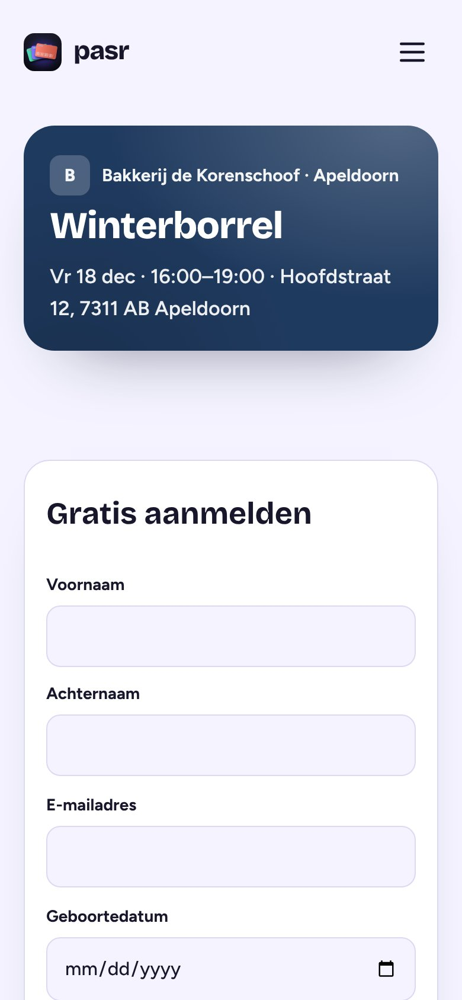
Open een event om te zien hoeveel mensen zijn aangemeld, binnen zijn, op de wachtlijst staan of zich afmeldden. In de lijst zoek je op naam of e-mail. Met Afmelden vervallen de tickets van iemand en gaat de plek naar de wachtlijst. Met Exporteer CSV download je de aanmeldingen (voornaam, achternaam, e-mail, geboortedatum, ticketsoort, status, aangemeld op en binnen om).
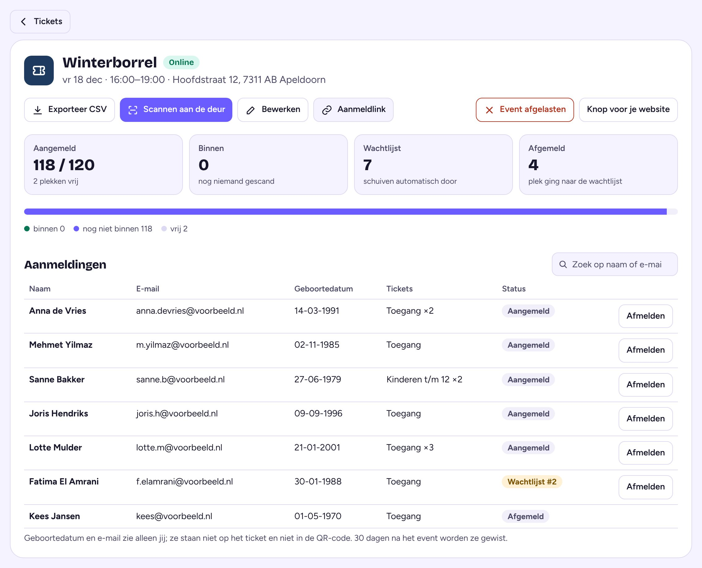
Kies in het event Scannen aan de deur, of kies in de scanner bij Tickets scannen voor het event. Een geldig ticket is groen en checkt meteen in; een ticket dat al gebruikt is, voor een ander event is, is afgemeld, op de wachtlijst staat of onbekend is, is rood. Je ziet steeds hoeveel mensen er binnen zijn. Een ticket kan maar één keer naar binnen.
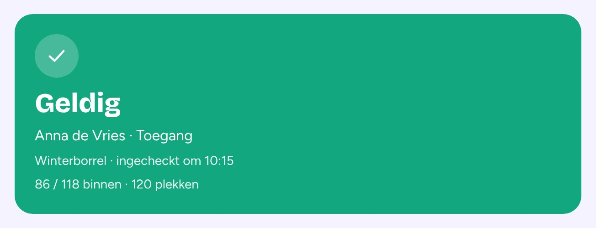
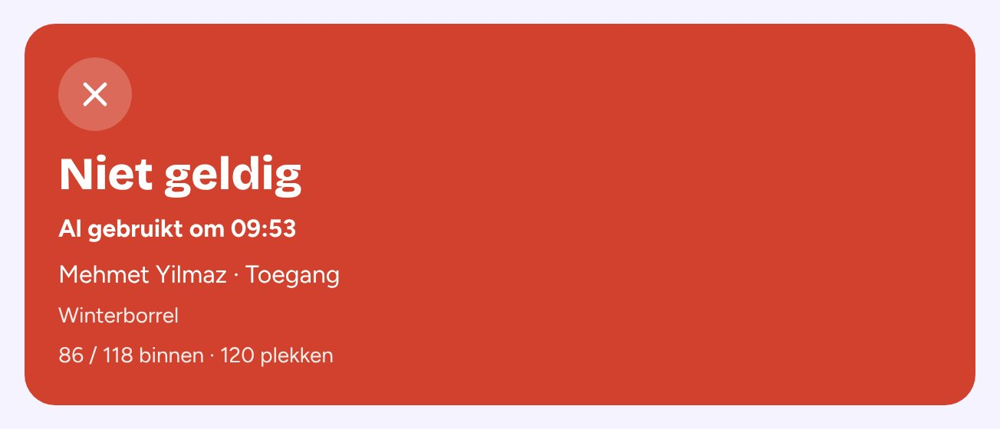
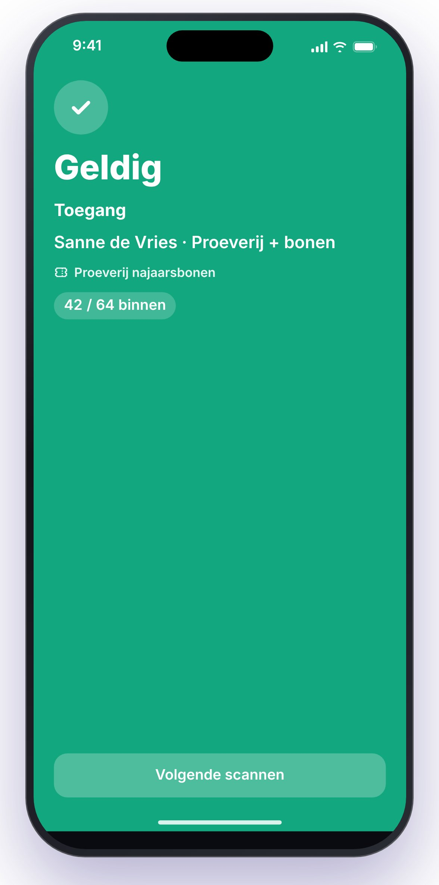
Met Bewerken pas je een event aan. Met Event afgelasten schrijf je een bericht aan de deelnemers; ze krijgen een mail en een pushmelding.
De gegevens van je gasten zie alleen jij, voor je eigen event. Op het ticket staat alleen de naam; de QR-code bevat alleen een willekeurige code en geen persoonsgegevens, en de geboortedatum staat nooit op het ticket. 30 dagen na het event (of na het afgelasten) wist Pasr naam, e-mailadres en geboortedatum. Een geëxporteerd CSV-bestand beheer je zelf: wis het als je het niet meer nodig hebt.
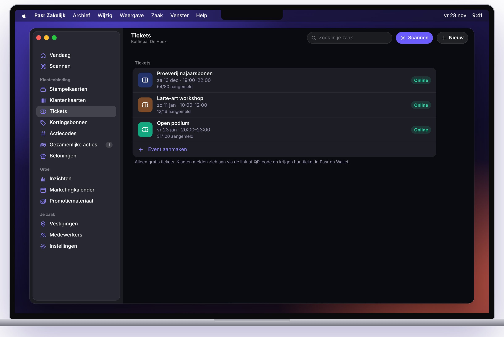
Procent of bedrag, minimale besteding, één per klant. Pauzeren of aanpassen kan altijd.
Een tijdelijke kortingsbon. Je klant bewaart de bon in Pasr en krijgt een unieke code (begint met PC) met QR-code. Alleen je eigen team kan die code inwisselen, en alleen in Pasr.
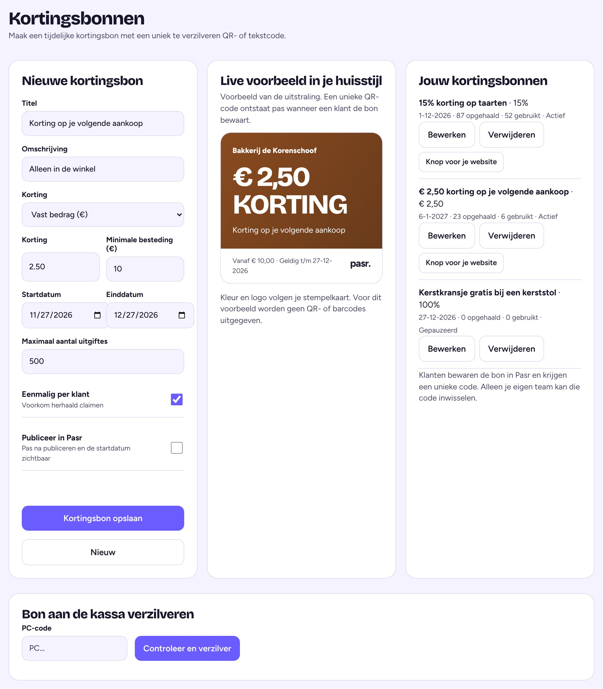
Scan de QR-code van de bon met de scanner, of typ de PC-code bij Bon aan de kassa verzilveren. Je ziet de bon, de korting en de minimale besteding. Geef de korting en kies Korting gegeven · verzilver bon. Daarna kan de code niet opnieuw worden gebruikt.
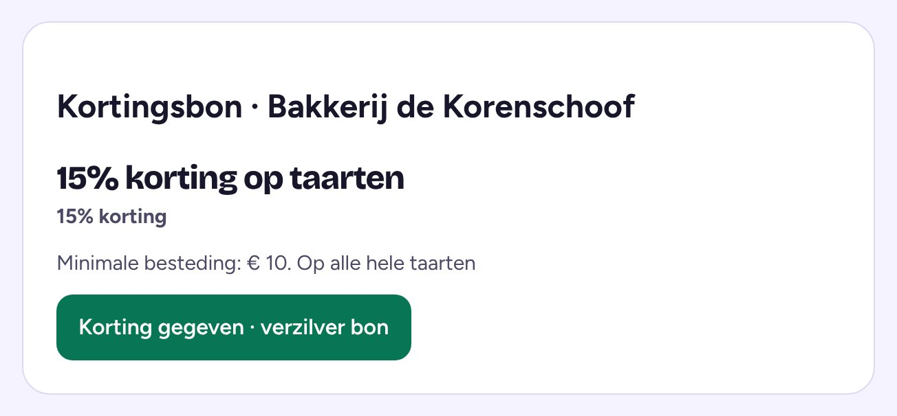
In je lijst zie je per bon hoeveel er zijn opgehaald en gebruikt, en of de bon Online, Gepland, Gepauzeerd of Verlopen is. Met Bewerken pas je hem aan; zet Publiceer uit om te pauzeren. Verwijderen maakt de bon onbruikbaar; eerdere verzilveringen blijven bewaard.
Een eigen code als HERFST20, met limiet en einddatum. Zie hoe vaak hij gebruikt is.
Een herbruikbare kortingscode voor een actie, los van de persoonlijke kortingsbonnen. Je kiest zelf de code, bijvoorbeeld HERFST20. Je klanten halen de actie op in de app Pasr en krijgen daar een persoonlijke code die met PA begint. Die persoonlijke code verzilver je; de algemene code zelf is een beheercode voor jou en niet verzilverbaar.
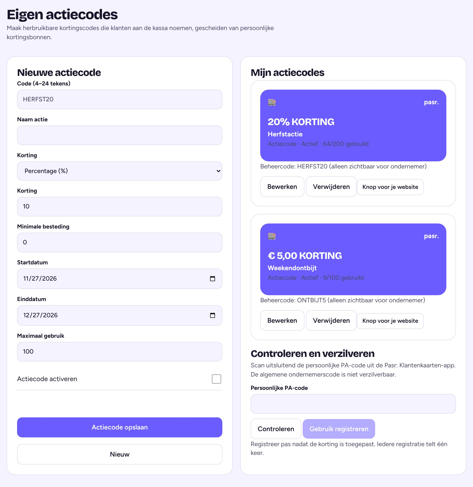
Per code zie je hoe vaak hij gebruikt is (bijvoorbeeld 64/200) en of hij Actief, Gepland, Gepauzeerd, Op of Verlopen is. Verwijder je een actiecode, dan worden de persoonlijke PA-codes onbruikbaar; de historie blijft bewaard.
Spaar samen met andere zaken in je straat of winkelcentrum. Op uitnodiging: jij kiest wie meedoet.
Een beloning voor bezoeken bij verschillende zaken. Een klant die bijvoorbeeld bij 3 deelnemende zaken is geweest, krijgt een gratis warme chocolademelk. Je nodigt zelf de zaken uit waarmee je samenwerkt; elke zaak beslist zelf of hij meedoet. De actie start pas als genoeg zaken meedoen; tot dan zien klanten niets. Er worden geen klantgegevens tussen zaken gedeeld.
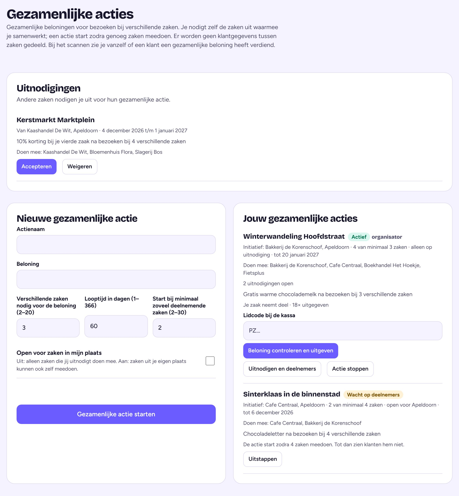
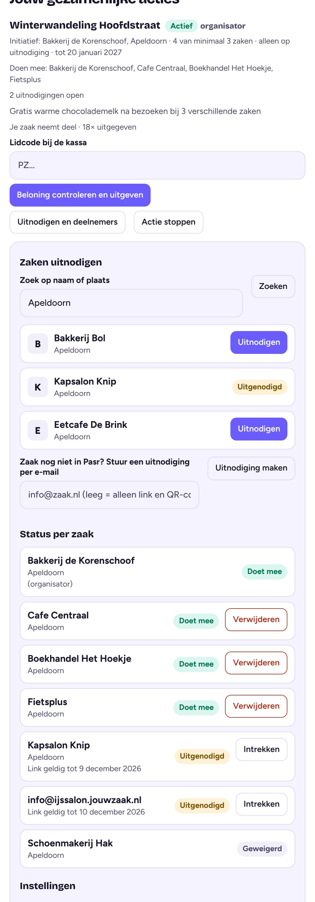
Word je zelf uitgenodigd, dan krijg je een mail en een melding, en staat de uitnodiging op Te doen en bovenaan Gezamenlijke acties. Kies Accepteren of Weigeren. Alleen de eigenaar van een zaak kan accepteren. Kreeg je een link, dan opent die een pagina met de actie; log in (of meld je gratis aan) en accepteer. Staan er onder Open acties in je plaats acties, dan kies je Meedoen met mijn zaak.
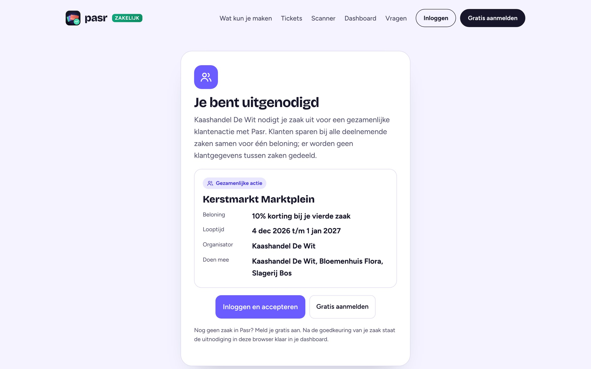
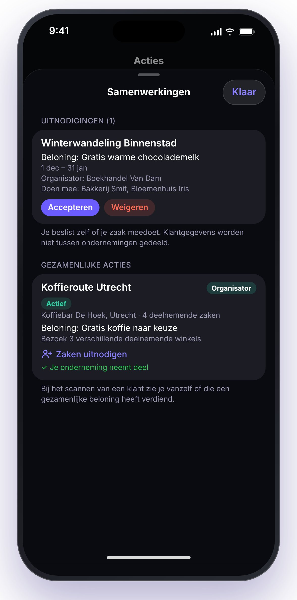
Scan je de stempelkaart van een klant, dan zie je onder Gezamenlijke acties hoeveel deelnemende zaken hij al bezocht (bijvoorbeeld "2 van 3 winkels bezocht"). Is het genoeg, dan kies je Uitgeven. Dat kan één keer per klant. Je kunt de lidcode ook invullen bij de actie en Beloning controleren en uitgeven kiezen. Als organisator kun je een actie stoppen; als deelnemer kun je uitstappen.
Extra voordelen per stempelkaart: tussentijdse beloningen, terugkomacties, vrienden uitnodigen, tijdelijke stempelacties en VIP-niveaus. Niets staat standaard aan.
Onder Beloningen kies je eerst een stempelkaart en zet je daarna per onderdeel aan wat je wilt. Je kunt het pas instellen als je een stempelkaart hebt.
| Onderdeel | Wat het doet |
|---|---|
| Meerdere beloningen | Tot acht tussentijdse beloningen op weg naar de volle kaart. Eén per regel: aantal stempels, dubbele punt, beloning, bijvoorbeeld 3: Gratis koekje. |
| Terugkomacties | Een herinnering voor klanten die een aantal dagen (7 tot 365, standaard 30) geen stempel kregen. Alleen voor klanten die meldingen toestaan; er gaan geen ongevraagde berichten uit. |
| Vrienden uitnodigen | Een klant deelt een persoonlijke link. De bonus (1 tot 3 stempels) komt pas na de eerste geldige scan van de nieuwe klant, voor beiden. Eenmalig per nieuwe deelnemer; zelfuitnodigingen tellen niet. |
| Tijdelijke stempelacties | Extra stempels binnen een periode, zoals dubbele stempels op dinsdag: vermenigvuldiger 1 tot 3, actiedag (-1 = elke dag, 0 = zondag t/m 6 = zaterdag), start- en einddatum. |
| Meerdere vestigingen | Namen van je vestigingen voor deze kaart (zie ook hoofdstuk 13). |
| VIP-niveaus | Brons, Zilver en Goud op basis van bezoeken. Jij kiest vanaf hoeveel bezoeken Zilver en Goud gelden, en eventueel een voordeel per niveau. |
| Marketingkalender en winkelstraatacties | Een voorkeur. Echte campagnes en gezamenlijke acties maak je in hun eigen onderdeel. |
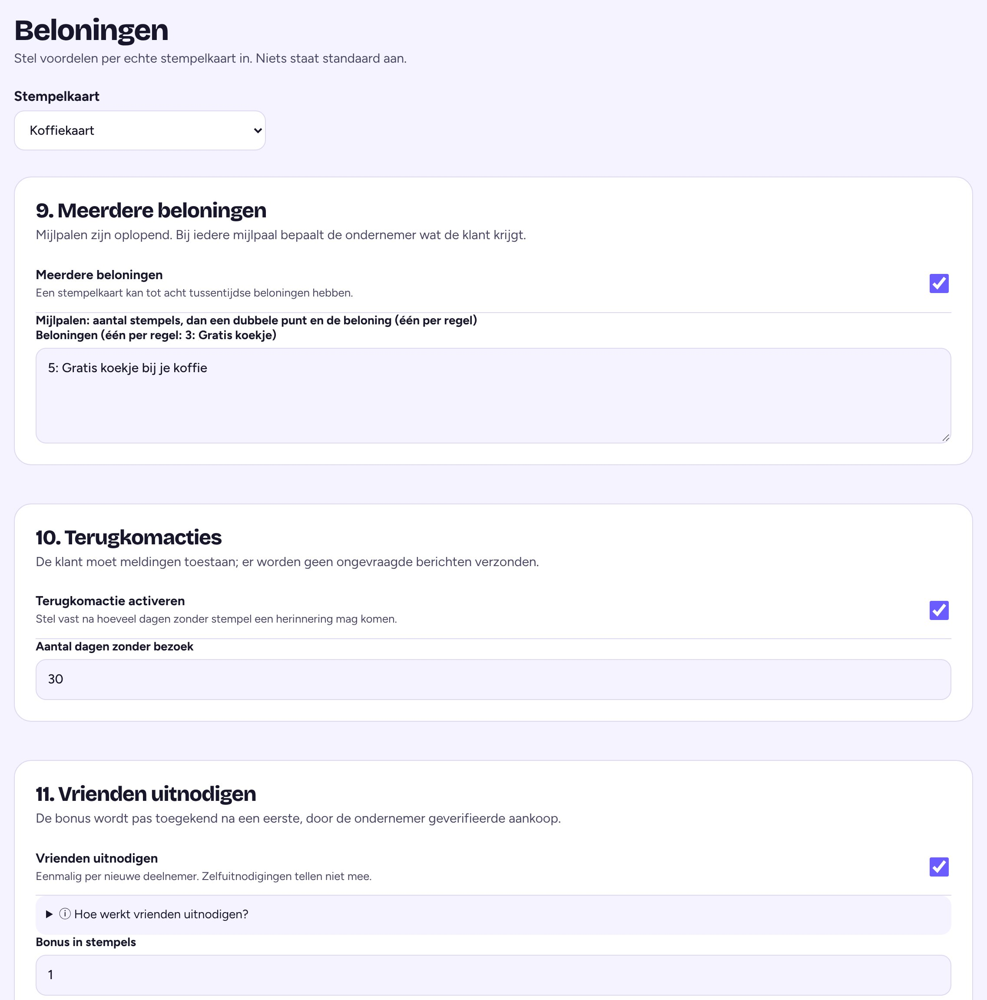
Een tussentijdse beloning geef je uit bij het scannen: onder Tussentijdse beloningen staat bij de bereikte mijlpaal de knop Uitgeven.
Eén scanner voor alles. Pasr Zakelijk herkent zelf wat je scant en laat groot zien wat je moet doen.
| Wat | Herken je aan | Wat je daarna doet |
|---|---|---|
| Stempelkaart | Code begint met PZ | Stempel erbij of beloning inwisselen |
| Kortingsbon | Code begint met PC | Korting geven en bon verzilveren |
| Ticket | Code van 24 tekens | Groen: naar binnen. Rood: niet geldig |
| Klantenkaart | Barcode of kaartnummer, zoals KS-000124 | Korting die nu geldt, bezoek registreren, beloning inwisselen |
Je scant in de app (tabblad Scannen), in het dashboard (knop Scannen rechtsboven), op pasr.nl/zakelijk/scan of op de Mac in een eigen venster. Actiecodes controleer je met de persoonlijke PA-code bij Actiecodes (hoofdstuk 8).
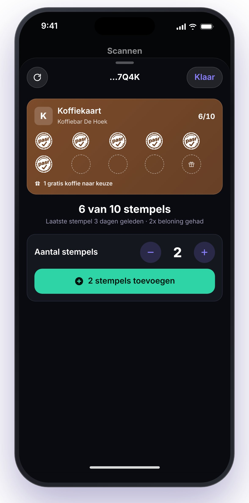
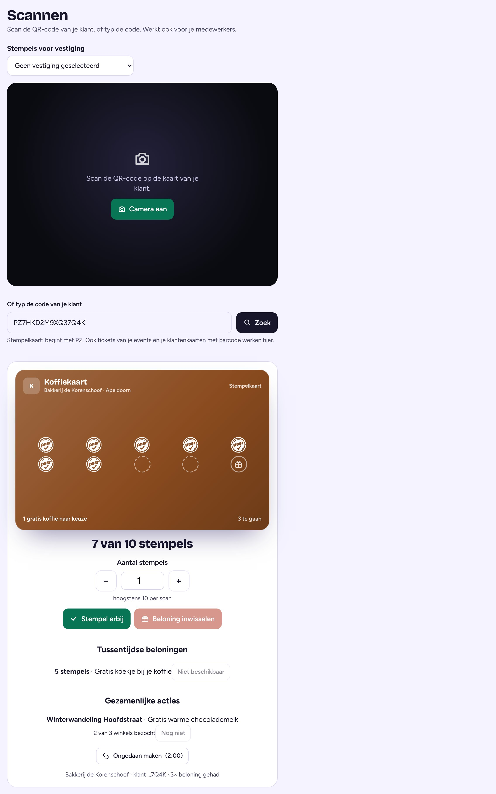
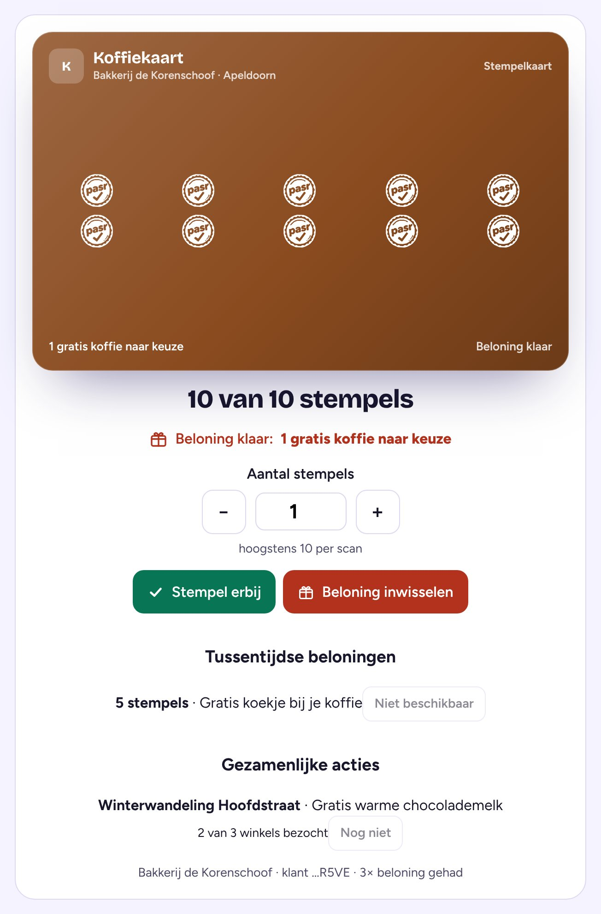
Heb je vestigingen, dan kies je bovenaan de scanner bij Stempels voor vestiging waar je staat. Die keuze blijft op dit apparaat bewaard.
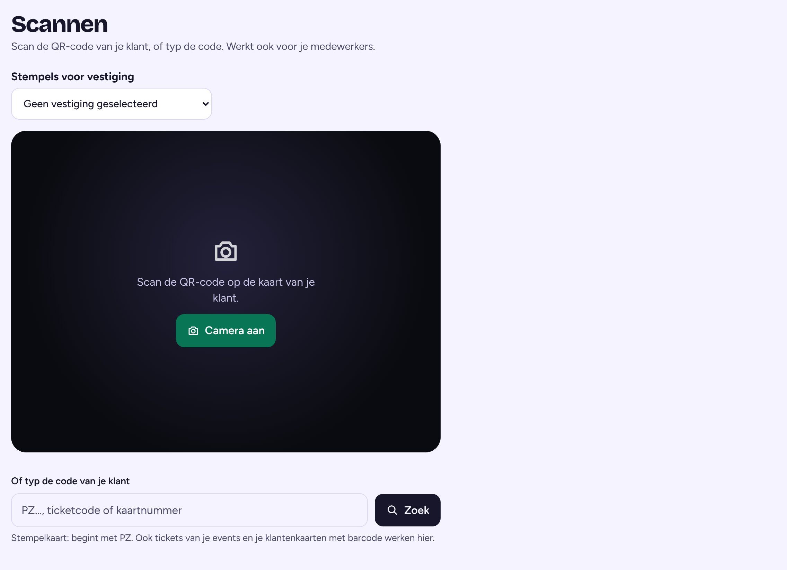
Op de Mac open je het scanvenster met ⇧⌘S. Je scant met de ingebouwde camera, een USB-camera of je iPhone als Continuity-camera (QR, Aztec, Code 128 en EAN-13). Je kunt een code ook typen of plakken. Een USB-barcodescanner werkt ook: die typt de code in het veld en drukt op Enter.
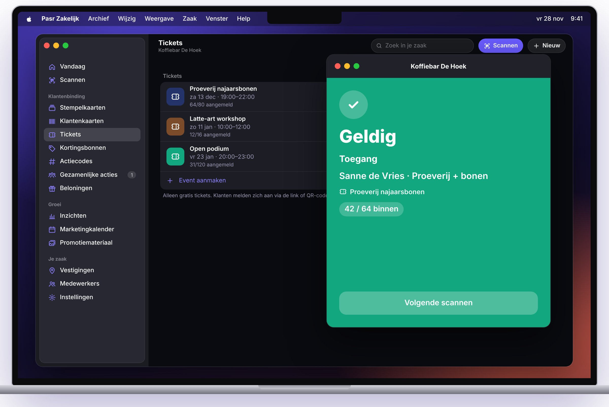
Alleen jij en je medewerkers scannen, nooit de klant. Een telefoon of tablet bij de kassa met Pasr Zakelijk en vergrendelen met Face ID is genoeg.
Zie hoe je klanten sparen, plan je acties en laat klanten je kaart, bon of event toevoegen vanaf je eigen website.
Inzichten toont geaggregeerde cijfers van je stempelkaarten en kortingsbonnen, zonder klantnamen of contactgegevens: klanten, nieuwe klanten en stempels in de laatste 30 dagen, terugkerende klanten (minstens twee stempelacties in 90 dagen), uitgegeven tussentijdse beloningen, en bewaarde en gebruikte kortingsbonnen. Daaronder staat de grafiek: kies Stempels, Beloningen of Nieuwe leden, de periode (Week, Maand, Kwartaal, Jaar) en vergelijk met de vorige periode. Onderaan zie je hoeveel stempelkaarten, kortingsbonnen en actiecodes actief zijn.
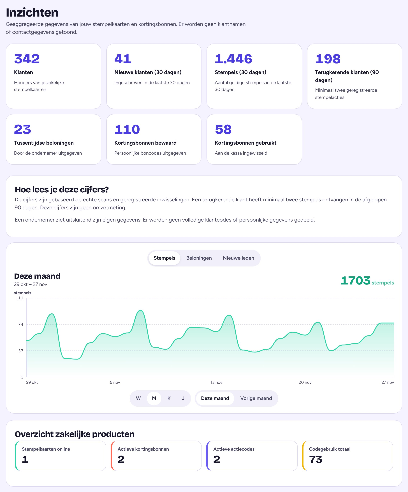
De cijfers komen uit echte scans en inwisselingen. Het is geen omzetmeting.
Plan je acties per kaart en houd bij wat je wanneer doet. Er worden geen berichten automatisch verstuurd.
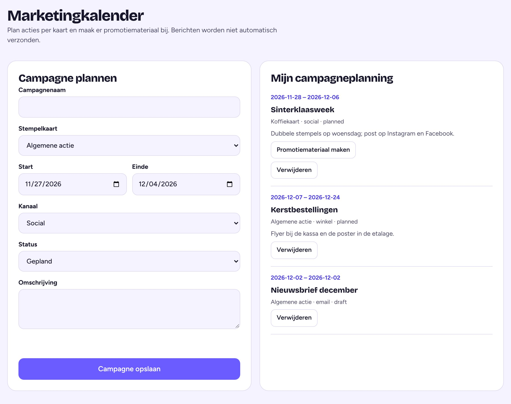
Kies onder Promotiemateriaal een stempelkaart, kortingsbon of actiecode. Pasr maakt beelden met de echte gegevens, de officiële Pasr-stempel en je persoonlijke QR-link:
| Formaat | Pixels |
|---|---|
| Instagram / Facebook vierkant | 1080 × 1080 |
| Instagram staand | 1080 × 1350 |
| Story / WhatsApp-status | 1080 × 1920 |
| Website / LinkedIn banner | 1200 × 630 |
| A4-printposter | 2480 × 3508 |
Kies Licht of Donker en download één PNG of alle ontwerpen als ZIP. Bij een conceptkaart verschijnt geen werkende QR-code. De printbare A4-flyer van een online stempelkaart open je met Flyer.
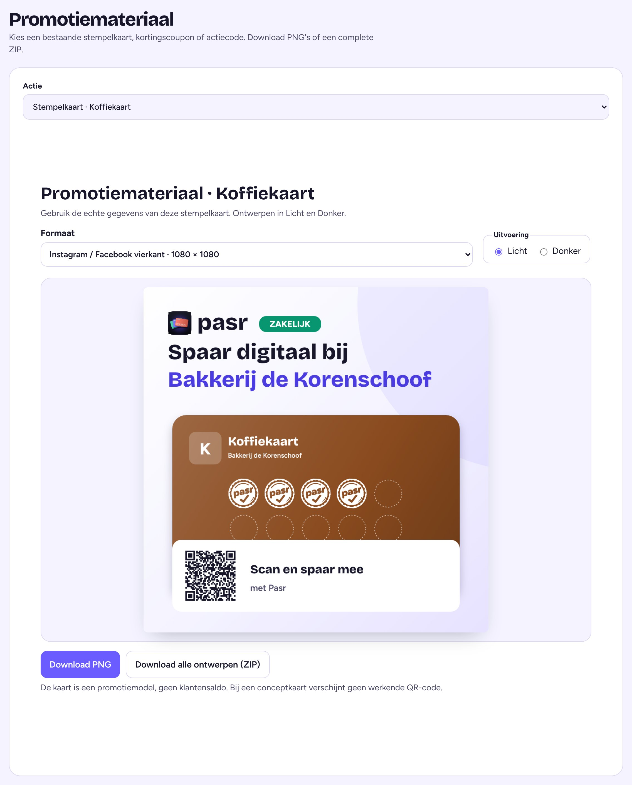
Zet de knop Voeg toe aan Pasr bij je stempelkaart, klantenkaart, event, kortingsbon of actiecode op je eigen website. Klanten tikken erop, Pasr opent en het staat erin. Zonder Pasr opent pasr.nl met de downloadknoppen.
De HTML-code ziet er zo uit:
<a href="https://pasr.nl/add/k/…">
<img src="https://pasr.nl/badge/nl/zwart.svg"
alt="Voeg toe aan Pasr" height="52">
</a>
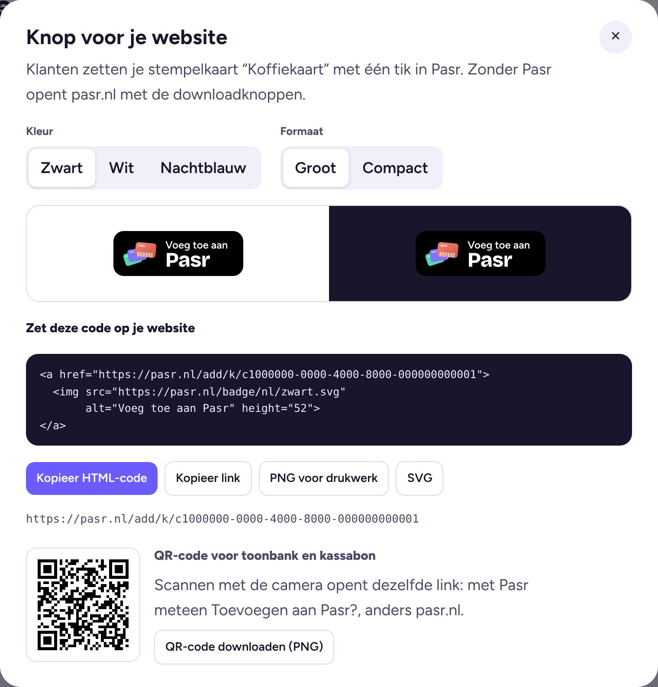
De links hebben een vaste vorm: pasr.nl/add/k/… (stempelkaart), /m/ (klantenkaart), /e/ (event), /c/ (kortingsbon) en /a/ (actiecode).
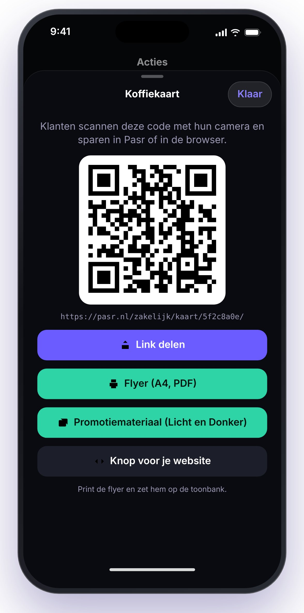
Vestigingen, medewerkers, instellingen, je account, het logboek en de Prullenbak.
Gebruik dezelfde stempelkaart in meerdere filialen. Medewerkers kiezen hun vestiging bij het scannen; de cijfers blijven per vestiging gescheiden.
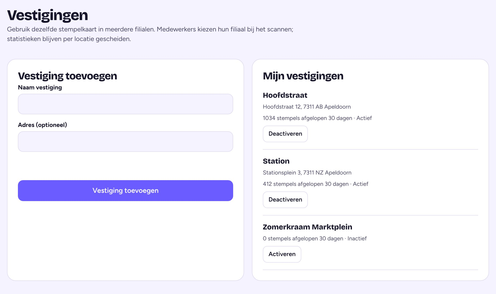
Hoe je iemand uitnodigt, lees je in hoofdstuk 2. Onder Wie kan scannen zie je iedereen met zijn rol en status: actief, uitnodiging open, uitnodiging verlopen of ingetrokken. Met Toegang intrekken (of Uitnodiging intrekken) kan iemand direct niet meer scannen voor je zaak. Het logboek blijft staan. In de iPhone-app veeg je iemand naar links om in te trekken.
Onder Account (in de zijbalk onderaan, of via je initiaal rechtsboven) zie je met welk e-mailadres je bent ingelogd, vraag je een mail aan voor een nieuw wachtwoord en log je uit op dit apparaat.
Je Pasr-account wordt verwijderd, ook in de app Pasr. Ben je eigenaar, dan verdwijnen ook je zaak, kaarten en leden. Dit kan niet ongedaan worden gemaakt. In het dashboard typ je ter bevestiging VERWIJDER.
Het logboek bewaart elke stempel, inwisseling en ongedaanmaking: wanneer, wat (met de stand ervoor en erna), welke kaart, de laatste tekens van de klantcode, en door wie (en op welk apparaat, zoals "Webscanner"). Niemand kan het logboek wissen, ook jij niet. Doorgestreept is ongedaan gemaakt. Je opent het via Vandaag › Hele logboek bekijken.
In de Prullenbak staan verwijderde stempelkaarten, kortingsbonnen en actiecodes. Klanten zien ze niet meer. Selecteer items en kies Definitief verwijderen om ze echt weg te halen.
Je hele zaak op de Mac, en je cijfers op je bureaublad of beginscherm.
Pasr Zakelijk voor Mac is een echte Mac-app (macOS 14 of nieuwer), met dezelfde schermen als op de iPhone en iPad. Je koopt hem niet apart: het is dezelfde app in de App Store. Links staat de zijbalk: Vandaag en Scannen, dan Klantenbinding, Groei en Je zaak. Medewerkers zien alleen Scannen en Instellingen. Je kunt meerdere vensters openen, en scannen gebeurt in een eigen venster.
| Toets | Wat het doet |
|---|---|
| ⌘N | Nieuwe stempelkaart (via Archief › Nieuw ook de andere soorten) |
| ⌥⌘N | Nieuw venster |
| ⌘F | Zoek in je zaak |
| ⇧⌘S | Scannen (eigen venster) |
| ⌘R | Ververs het scherm dat je ziet |
| ⇧⌘R | Gegevens verversen (ook de widgets) |
| ⌘1 … ⌘7 | Menu Zaak: 1 Vandaag, 2 Stempelkaarten, 3 Klantenkaarten, 4 Tickets, 5 Gezamenlijke acties, 6 Inzichten, 7 Medewerkers |
| ⌘, | Instellingen |
In het menu Help staan Hulp en contact (pasr.nl/support) en Pasr Zakelijk op pasr.nl. Meldingen werken ook op de Mac.
Voor iPhone, iPad en Mac zijn er drie widgets:
| Widget | Formaten | Wat je ziet |
|---|---|---|
| Vandaag | Klein, middel | Stempels, beloningen en nieuwe leden van vandaag, met de trend van deze week |
| Komend event | Klein, middel | Je eerstvolgende event met het aantal aanmeldingen en wie er binnen is |
| Te doen | Middel, groot | Uitnodigingen voor gezamenlijke acties, concepten en codes of kortingsperiodes die bijna aflopen |
Widgets tonen wat de app als laatste ophaalde; ze loggen zelf niet in. Open de app of kies ⇧⌘R om ze bij te werken.
Je ziet cijfers; persoonsgegevens alleen waar het moet (tickets).
| Product | Wat je ziet | Wat je niet ziet |
|---|---|---|
| Stempelkaart | Laatste tekens van een anonieme klantcode, stempels, beloningen, wanneer | Naam, e-mailadres, telefoonnummer |
| Kortingsbon, actiecode | Aantallen en de code die je verzilvert | Wie de klant is |
| Klantenkaart | Kaartnummer en de stand; de naam alleen als de klant dat aanzet | Contactgegevens |
| Tickets | Voornaam, achternaam, e-mailadres, geboortedatum, alleen voor je eigen event | Gegevens van andere events |
| Gezamenlijke acties | Hoeveel deelnemende zaken een klant bezocht | Gegevens van klanten van andere zaken; er wordt niets gedeeld |
Je ziet de naam en het e-mailadres van je medewerkers, en in het logboek welk account (en welk apparaat) wanneer een stempel gaf, een beloning inwisselde of iets ongedaan maakte.
De volledige privacyverklaring staat op pasr.nl/privacy, met een eigen deel over stempelkaarten van ondernemers. pasr.nl gebruikt geen tracking, statistieken of advertenties. De app Pasr Zakelijk heeft geen reclame en geen tracking.
De vragen van pasr.nl/zakelijk, en een paar meer.
Niets. Geen abonnement en geen kosten per klant, stempel, ticket of scan. Ook geen reclame op je kaart of ticket.
Nee. Tickets zijn alleen voor gratis events, zoals een borrel, workshop of open dag. Zo blijft het simpel: geen betalingen en geen ticketvoorwaarden.
Voornaam, achternaam, e-mailadres en geboortedatum. Je ziet ze alleen voor je eigen event, en 30 dagen na het event wissen we ze.
Bij stempelkaarten, kortingsbonnen en actiecodes alleen aantallen en de laatste tekens van een anonieme klantcode; Pasr vraagt je klanten daarvoor geen naam, e-mailadres of telefoonnummer. Bij een klantenkaart zie je het kaartnummer, en de naam alleen als de klant dat aanzet.
Nee. Je scant met de app Pasr Zakelijk op je telefoon of tablet, of met de scanner in je browser. Ook de klantenkaart scan je zo: korting en spaarstand zie je meteen. Een koppeling met je kassa is er niet.
Voor een stempelkaart en tickets niet: sparen werkt ook in de browser, en het ticket met QR-code staat op pasr.nl en in de bevestigingsmail. Met de gratis app Pasr (iPhone en Android) staat alles bij elkaar, ook in Apple Wallet of Google Wallet, met meldingen. Lid worden van je klantenkaart doet je klant in de app Pasr.
Alleen jij en je medewerkers scannen, nooit de klant. Bij stempelkaarten kies je een afkoeltijd en het maximum per scan, en een ticket kan maar één keer naar binnen. Alles staat in een logboek dat niemand kan wissen.
Ja. Binnen 2 minuten maak je de laatste stempel of inwisseling ongedaan. Het staat daarna doorgestreept in het logboek.
Ja, met een gezamenlijke actie. Jij nodigt de zaken uit en elke zaak beslist zelf of hij meedoet; de actie start zodra genoeg zaken meedoen.
Ja. Log in op pasr.nl/zakelijk met hetzelfde Pasr-account als in de app. Je maakt er stempelkaarten, klantenkaarten, events en acties, scant, nodigt medewerkers uit en bekijkt je cijfers.
Een account maken en je zaak aanmelden kost een paar minuten. We keuren elke zaak met de hand goed, meestal binnen een werkdag. In de tussentijd maak je alvast je eerste kaart of event.
De app Pasr Zakelijk werkt op iPhone en iPad met iOS 17 of nieuwer, op de Mac met macOS 14 of nieuwer en op Android 8 of nieuwer (download op pasr.nl/zakelijk/download). Het dashboard en de scanner werken in elke moderne browser.
Tot 5 per zaak, elk met 2 tot 30 stempels. Klantenkaarten, events, kortingsbonnen en actiecodes komen daar los bij.
Kies bij Medewerkers Toegang intrekken. Hij kan direct niet meer scannen voor je zaak; wat hij deed blijft in het logboek staan.
Zet in Instellingen Vindbaar in Pasr aan, typ je adres en kies het uit de lijst, en sla op. Je kaart moet online staan.
De app staat niet in de Play Store. Download de nieuwste versie op pasr.nl/zakelijk/download; in de app staat bij Instellingen ook Nieuwste versie downloaden.
Kom je er niet uit? We helpen je graag.
| Wat | Waar |
|---|---|
| Mail ons | support@pasr.nl. Zet erbij welk apparaat je gebruikt en wat er misgaat; een screenshot helpt. |
| Hulp en veelgestelde vragen | pasr.nl/support |
| Pasr Zakelijk | pasr.nl/zakelijk |
| Dashboard | pasr.nl/zakelijk/dashboard |
| Scanner in de browser | pasr.nl/zakelijk/scan |
| Privacyverklaring | pasr.nl/privacy |
| App voor iPhone, iPad en Mac | App Store: Pasr Zakelijk |
| App voor Android | pasr.nl/zakelijk/download |
| Pasr voor je klanten | App Store: Pasr · pasr.nl/android |
| Dit handboek | pasr.nl/zakelijk/handboek/Handboek-Pasr-Zakelijk.pdf |
In de app vind je onder Instellingen › Hulp: Hulp en contact, Privacyverklaring, Wat is nieuw, Beoordeel Pasr Zakelijk en Pasr Zakelijk op pasr.nl. Op de Mac staan ze in het menu Help.
In het dashboard klik je rechtsboven op je initiaal; onder Hulp staan Handboek (PDF) en Hulp en contact. Op een telefoon vind je ze onder Meer › Hulp, en onderaan elke pagina van pasr.nl/zakelijk staat de link Handboek (PDF).
Handboek Pasr Zakelijk · versie 1.0.4 · november 2026